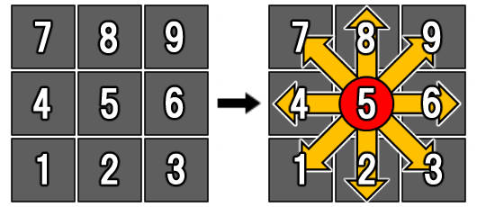

Numpad Notation
The numpad notation is a universal notation that assigns a direction with a number on the numpad of a keyboard For example, 4 means left, 6 means right, 2 means down, 8 means up, and 5 is a neutral postion where you are not pushing any buttons.
The numpad notation is one of the universal notations given to buttons and directions. This notation is maily based on the arrangement of the number pad on a keyboard. For example, 4 means left, 6 means right, 2 means down, 8 means up, and 5 is a neutral postion where you are not pushing any buttons. Using the numpad notation makes it simple and easy for any player to understand which direction and motions to perform when inputing a move. For example, Street Fighter's Ryu has a special move called "hadouken", which requires you to input down diagonally down right, right, and finally punch, can be easily as translated as 236 punch.
Motion Abbreviations
Most special move commands require you to input one or two of the these common motions. These will be using the numpad notation
- Quarter Circle Forward (236)
- Quarter Circle Back (214)
- Half Circle Forward (41236)
- Half Circle Back (63214)
- Dragon Punch (623)
- Reverse Dragon Punch (421)
- Full Circle Motion (63214789)
Basic Terms
These are mainly used in every fighting game that are used to talk about a character's moves and their properties.
Abare
Hitting an opponent, usally with a jab, as a way to disincentivize an opponent from being offensive.
Conversion
A conversion is the abilty to maximize damage from landing a hit. For example, a player would land a hit and would have to quickly judge which option would give them the best advantage.
Chip Damage
Damage done to a player when they are blocking an attack.
Fuzzy
The act of locking an opponent in a standing block state which allows the player to attack with an overhead.
Mix up
A mix up is the act of using a comdination of attacks that require your opponent to garud either up or down. This can increase your likelihood of landing a hit and will allow you to perform a combo.
Okizeme
This is the opponent's offensive decision intented to strike the oppounent as they get up from being on the ground.
Touch of death
A combo that can deal 100% damage of the opponent's health bar.
Whiff
A whiff refers to a missed attack that did not connect with the opponent. This often leads to the other player to have an advantage.
- Abare- Hitting an opponent, usally with a jab, as a way to disincentivize an opponent from being offensive.
- Conversion- A conversion is the abilty to maximize damage from landing a hit. For example, a player would land a hit and would have to quickly judge which option would give them the best advantage.
- Chip Damage- Damage done to a player when they are blocking an attack.
- Fuzzy- The act of locking an opponent in a standing block state which allows the player to attack with an overhead.
- Mix up- A mix up is the act of using a comdination of attacks that require your opponent to garud either up or down. This can increase your likelihood of landing a hit and will allow you to perform a combo.
- Okizeme- This is the opponent's offensive decision intented to strike the oppounent as they get up from being on the ground.
- Touch of death- A combo that can deal 100% damage of the opponent's health bar.
- Whiff- A whiff refers to a missed attack that did not connect with the opponent. This often leads to the other player to have an advantage.